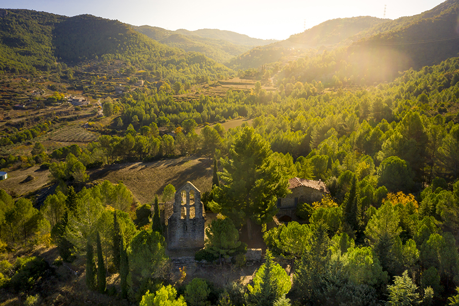
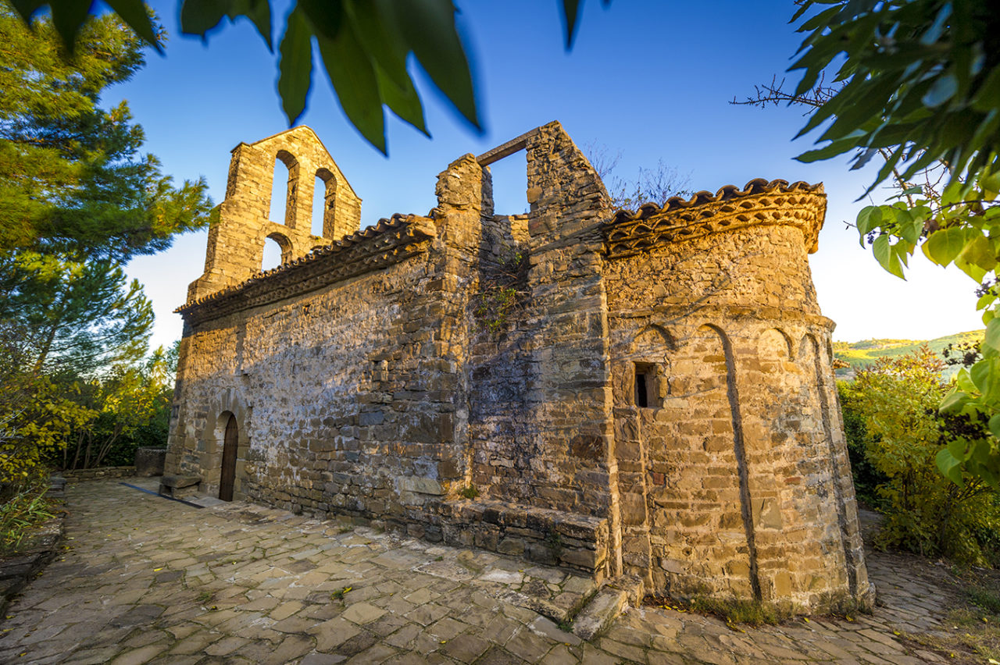

L’origen de la població habitada de Sant Vicenç de Castellet és a Vallhonesta, nucli de població habitat fa uns mil anys. Dedicat de forma gairebé exclusiva al conreu de la vinya, fins a mitjan segle XIX es va mantenir com a municipi diferenciat del de Castellet. Vallhonesta conserva encara el seu caràcter rural i la seva ubicació l’ha consolidat com una de les portes d’entrada del parc natural de Sant Llorenç del Munt i l’Obac.
Destaca l’ermita romànica de Sant Pere, construïda el segle XI. És especialment singular el seu campanar d’espadanya del segle XIII, amb quatre finestrals. Té diferents etapes constructives. La part més antiga és l’absis i l’inici de la nau, que corresponen al segle XI. La resta de la nau es va reedificar el segle XII, potser per substituir una nau preromànica. A principis del segle XIII es va refer el mur de ponent, on s’alça el campanar. A l’interior s’hi conserva un sarcòfag romànic.
